Választható hősök


Widowmaker
Története
Amélie Lacroix (Widowmaker) férje (Gerard Lacroix) az Overwatch tagja volt, aki a Talon terrorista mozgalom felszámolásában dolgozott. Gérard ellen több merényletet próbáltak elkövetni, amik mind sikertelenek voltak. Így a Talon Gérard helyett Amélie-re fókuszált. Sikeresen elrabolták őt és egy új neurális szérumot használtak rajta. Eredetileg nem tudták megtörni, viszont a szérum hatására megtört és újra programozták a gondolkodását. Az Overwatch fáradságos munkájával sikerült megtalálniuk Amélie-t és így visszatérhetett az előző életéhez. Viszont megtalálása után két héttel álmában megölte Gérardot, ugyanis alvajáróként arra volt programozva, hogy férjével végezen..
Mivel küldetését elvégezte, visszatért a Talonhoz, akik további módosításokat végeztek rajta. Emberi érzéseitől megfosztották, kitanították a rejtőzködés művészetére, illetve a szívverését is lelassították, utóbbi hatására a bőrszíne kék lett. Ezen módosítások után „Widowmaker” lett a Talon szervezet legkiválóbb bérgyilkosa.
Képességei
|
Markoló horog |
Widowmaker kilő egy horgonyt, amellyel magasalatokra feltudja húzni magát, így jobban átlátja a harcteret és elmenekülhet az ellenfelektől. | SHIFT |
|

Infra látásmód |
Widowmaker hőszenzorának segítségével képes átlátni a falakon és tárgyakon egy bizonyos ideig. Ezt a látást csapattársai is megkapják. | Q |
|
Méreg bánya |
Widowmaker elhelyez egy érgező aknát, ami minden felületre feltapad. Amikor egy célpont a közelébe ér, az akna aktiváldódik és mérgező gázt bocsájt ki az összes ott tartózkodó ellenfélnek. | E |
Hangok
Egy lövés, egy ölés
Készen állok az ölésre
Ellenség láthatáron
Mindig célba találok